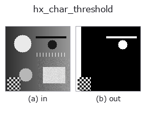

halcon_ext op• Data kinds: image → region
• Call: fullseye.apply(img, "hx_char_threshold", a=0.5, b=0.5) (2-D model = एक image + दो scalar knobs a,b∈[0,1])
• HALCON समकक्ष: char_threshold (अर्थ और parameters समझने के लिए HALCON reference उपयोगी है)

*Figure synthetic 128×128 input पर सच में चलाकर मिला output है। बाईं ओर input, दाईं ओर output। Point clouds ऊपर से देखे गए scatter के रूप में (brightness = z), 1-D series line के रूप में, volumes z दिशा में maximum-intensity projection के रूप में, videos बीच के frame के रूप में, complex images amplitude के रूप में, और जो return values चित्र नहीं बन सकते वे स्वयं values के रूप में दिखाए जाते हैं।*
Knob a को बदलकर (0.1 / 0.5 / 0.9, दूसरा knob default पर):
▸ hx_char_threshold: knob a को बदलने का figure (docs site)
*Knob b output नहीं बदलता (मापा गया: 0.1 / 0.5 / 0.9 पर एक जैसा)।*
दूसरी images पर भी (synthetic scene / photo / coins। ऊपर की row में inputs, नीचे की row में उनके outputs। Knobs default पर):
▸ hx_char_threshold: दूसरी images पर output (docs site)
*चौथा column colour (H,W,3) input है। यह op channels को पार किए बिना colour संभालता है (colour channel को तीसरे spatial axis की तरह convolve नहीं करता)।*
चमकीले background से अँधेरे अक्षर निकालता है (region): thresh = mean - k*std (k, a है) से नीचे वाला हिस्सा चुनता है।
> नीचे का विस्तृत विवरण मूल text में है — सारांश और headings का अनुवाद हो चुका है।
画像全体の平均 mean と標準偏差 std から thr = mean - k*std を計算し、v < thr の画素を 1 とする 0/1 の float region を返す。暗い文字が少数派で明るい背景が多数派、という前提の大域しきい値。
• a → 係数 k = 0.2 + 1.8*a(0.2〜2.0)。大きいほど厳しく(より暗い画素だけ)、小さいほど多く拾う。
• b は未使用。
濃淡が一様な画像では std = 0 となり thr = mean で「平均未満」だけが残る。照明ムラがあると 1 本のしきい値では片側が欠けるので、前に hx_plane_deviation で背景を引くか、局所版の dyn_threshold / local_threshold を使う。明るい文字を取りたい場合は先に画像を反転する(この op は下側しか選ばない)。
• gallery2d_halcon_ext family guide
• Sample data catalog (DL URL / license) — 2-D के लिए skimage.data (BSD/public) + synthetic, 3-D के लिए real data sources (Stanford/PDS आदि) के DL URL।
• Operators का स्रोत और संदर्भ — इस op family के मूल research/methods के स्रोत।
• Algorithm का मानक स्रोत (लेखक, वर्ष) और उपयोग ऊपर की family usage guide में दिए गए हैं।
नीचे का program सच में चलता है, यह जाँचा गया है (figure वाला ही input)। Studio की help में यह block buttons बन जाता है, जिनसे इसे वहीं load करके चलाया जा सकता है।
hx_char_threshold 0.50 0.50
▸ यह pipeline load करें · Load करके चलाएँ
• gallery2d_halcon_ext — py -3.11 examples/gallery2d_halcon_ext.py
region को input के रूप में लेते हैं)identity · reg_erode · reg_dilate · reg_open · reg_close · fill_holes · select_largest · remove_small
halcon_ext)hx_gen_circle · hx_gen_ellipse · hx_gen_rectangle2 · hx_gen_checker_region · hx_gen_grid_region · hx_gabor · hx_fit_surface1 · hx_fit_surface2
*Provenance: ops.py — 2D operator registry. यह per-op note tools/opdocs.py md से अपने-आप generate होता है (हाथ से edit न करें)।*
© 2026 Kazufumi Furuse — Fullseye operator documentation. Licensed under Apache-2.0.